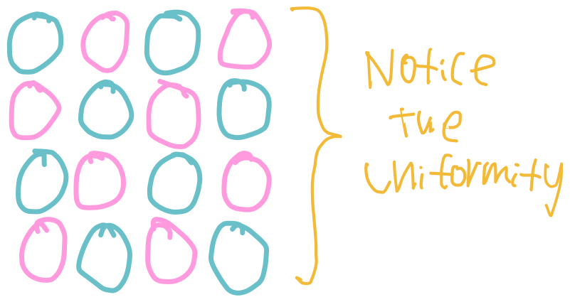
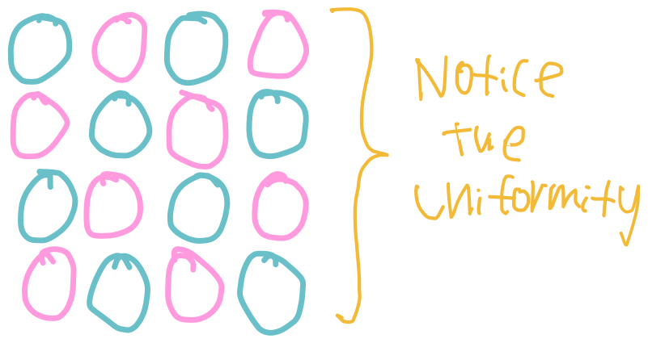

Overview

Mixtures
Heterogeneous mixture
Where the prefix Hetero- means different

Homogeneous mixture
Where the prefix Homo- means same
Given some element
Where
Mnemonic
Cations are Pawsitive
When a question says, determine the energy of 1 ㏖ of photons, the unit will be ᴶ/㏖.
| Value | Prefix | Symbol |
|---|---|---|
| deca | ||
| hecto | ||
| kilo | ||
| mega | ||
| giga | ||
| tera |
| Value | Prefix | Symbol |
|---|---|---|
| deci | ||
| centi | ||
| mili | ||
| micro | ||
| nano | ||
| pico |
Where the prefix Hetero- means different
Where the prefix Homo- means same
